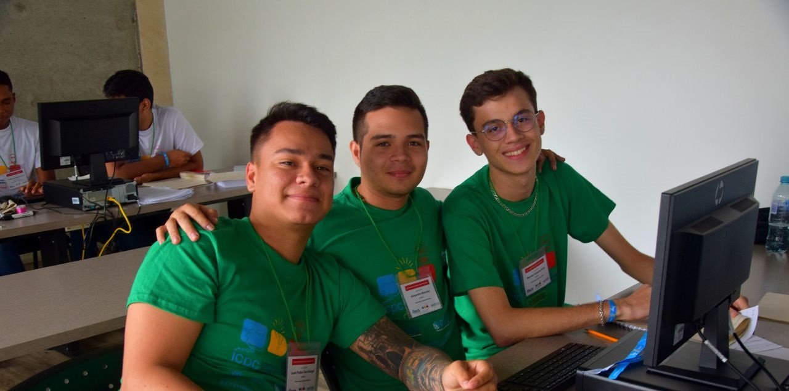
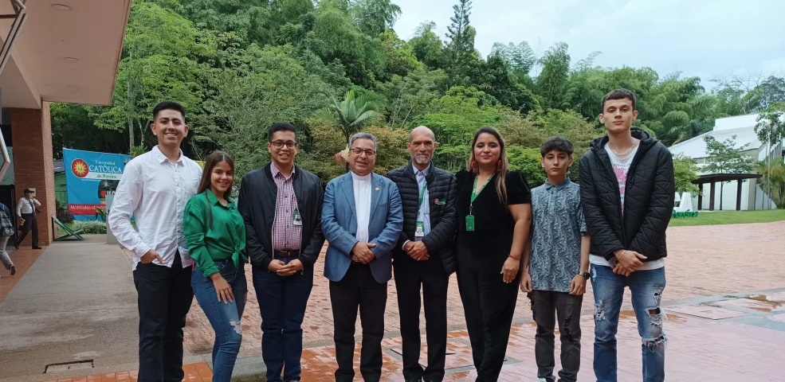
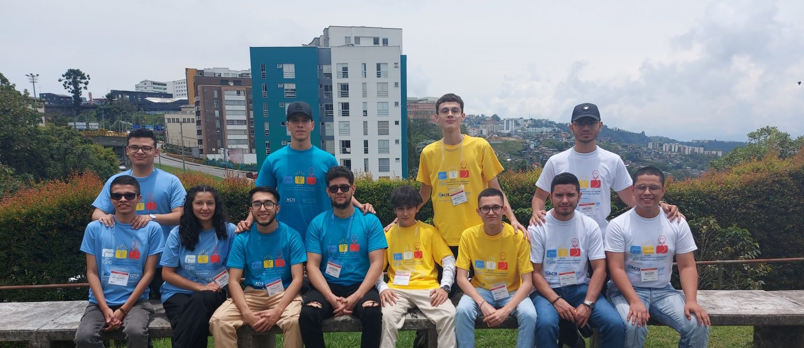
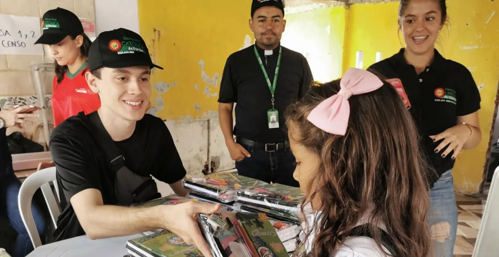
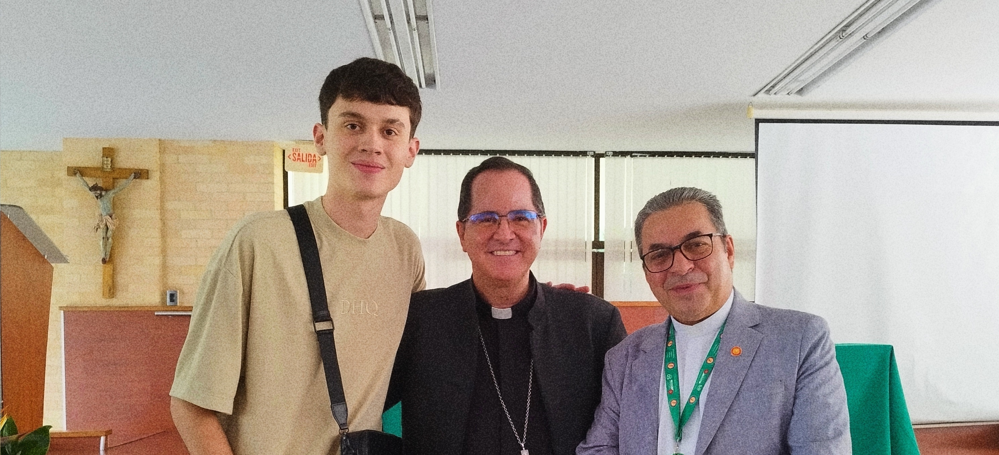

ChatBot-MentalHealth
Chatbot especializado en apoyo de salud mental utilizando IA para proporcionar recursos y soporte emocional a usuarios que lo necesiten.
Estudiante de décimo semestre de Ingeniería de Sistemas y Telecomunicaciones con experiencia en desarrollo web, software, análisis de datos e inteligencia artificial. Mi enfoque combina innovación, tecnología y soluciones de alto impacto para problemas reales, respaldado por un amplio conocimiento en diferentes tecnologías modernas y actuales.
Conoce más de míEstos son mis 6 proyectos más destacados donde aplico tecnologías modernas para resolver desafíos reales. Cada proyecto representa mi evolución como desarrollador y mi pasión por crear soluciones innovadoras.
Chatbot especializado en apoyo de salud mental utilizando IA para proporcionar recursos y soporte emocional a usuarios que lo necesiten.
Sistema avanzado de gestión para mantenimiento predictivo, optimizando recursos industriales y previniendo fallos técnicos.
Página de inicio moderna para plataforma de preguntas y respuestas rápidas con diseño centrado en la experiencia del usuario.
Interfaz de usuario elegante para aplicación relacionada con la producción y distribución de café colombiano premium.
Estoy trabajando en nuevos proyectos innovadores que pronto estarán disponibles. ¡Mantente atento a las actualizaciones!
Como estudiante de décimo semestre, tengo grandes ideas en mente para mi proyecto de grado y futuros desarrollos.
Descubre mi colección completa de proyectos, experimenta con filtros avanzados y explora mi evolución como desarrollador.
Explorar Todos mis Repositorios
Representé a mi universidad en la prestigiosa Maratón Nacional de Programación ACIS/REDIS, fase clasificatoria para la Maratón Regional Latinoamericana ICPC 2022. Esta competencia de élite desafía las habilidades de resolución algorítmica y programación competitiva, desarrollando capacidades técnicas avanzadas bajo presión temporal.

Elegido como representante oficial ante el Consejo Estudiantil de la Universidad Católica de Pereira, ejerciendo un rol de liderazgo estratégico en la toma de decisiones académicas e institucionales. Mi participación activa en procesos deliberativos fortalece la voz estudiantil y promueve una cultura de participación ciudadana responsable.

Seleccionado para representar a la Universidad Católica de Pereira en la XXXVII Maratón Nacional de Programación ACIS/REDIS 2023, celebrada en Manizales. Compitiendo junto a 108 equipos de las universidades más prestigiosas de Colombia, esta experiencia consolidó mis competencias en algoritmos avanzados y trabajo colaborativo de alto rendimiento.

Lideré una iniciativa de impacto social para asistir a más de 500 familias afectadas por una emergencia en el barrio Futuro Bajo. A través de gestión estratégica y coordinación interinstitucional, logramos movilizar recursos para entregar 170 kits educativos, demostrando el compromiso universitario con el desarrollo comunitario sostenible.

Participé en la visita protocolar de Monseñor Nelson Jair Cardona Ramírez al campus universitario, representando la voz estudiantil en este encuentro de liderazgo institucional. Este evento fortaleció los vínculos estratégicos entre la academia, la comunidad religiosa y el estudiantado, consolidando nuestra identidad universitaria católica.
¿Buscas un profesional apasionado por la tecnología y la innovación? Estoy disponible para colaborar en proyectos desafiantes que requieran soluciones creativas y eficientes. Mi experiencia en desarrollo, IA y análisis de datos puede impulsar tus ideas al siguiente nivel.
O conéctate conmigo en redes: